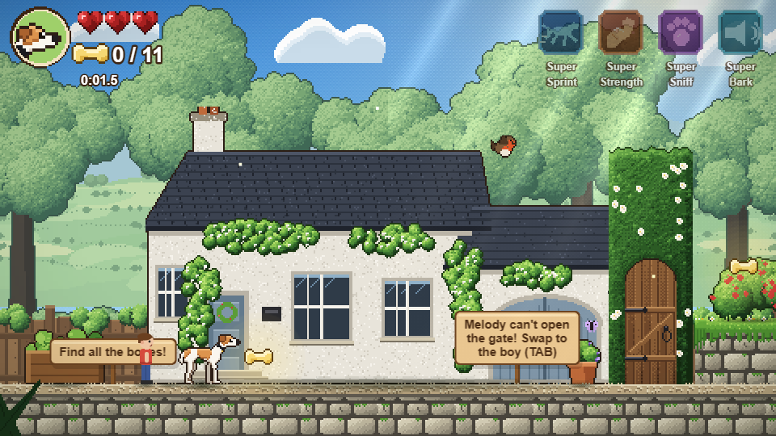
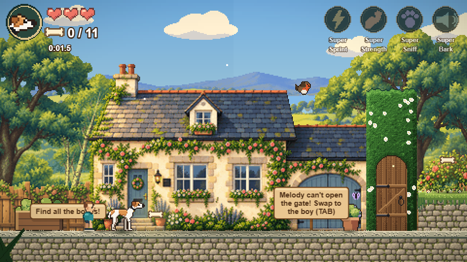

Melody’s Adventures — garden art overhaul
56 replacement PNGs. These are actual game captures with identical framing and gameplay source. Drag to compare.


BeforeAfterThe environment, props, boy and HUD textures are updated. Tutorial sign layouts and the consolidated HUD panel remain coding work for Claude. Melody’s animation sheets remain intact.
Art direction · Validation · All six screens